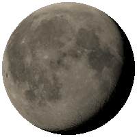

How the Moon Got Its Name
Our Moon shares a name with all moons simply because people didn't know other moons existed until Galileo Galilei discovered four moons orbiting Jupiter in 1610. In Latin, the Moon was called Luna, which is the main adjective for all things Moon-related: lunar.
Potential for Life
The many missions that have explored the Moon have found no evidence to suggest it has its own living things. However, the Moon could be the site of future colonization by humans. The discovery that the Moon harbors water ice, and that the highest concentrations occur within darkened craters at the poles, makes the Moon a little more hospitable for future human colonists.
Size and Distance
With a radius of about 1,080 miles (1,740 kilometers), the Moon is less than a third of the width of Earth. If Earth were the size of a nickel, the Moon would be about as big as a coffee bean.
The Moon is an average of 238,855 miles (384,400 kilometers) away. That means 30 Earth-sized planets could fit in between Earth and the Moon.
The Moon is slowly moving away from Earth, getting about an inch farther away each year.
Illustration showing the distance from the Earth to the Moon.
NASA/Moore Boeck
Orbit and Rotation
The Moon is rotating at the same rate that it revolves around Earth (called synchronous rotation), so the same hemisphere faces Earth all the time. Some people call the far side – the hemisphere we never see from Earth – the "dark side", but that's misleading.
As the Moon orbits Earth, different parts are in sunlight or darkness at different times. The changing illumination is why, from our perspective, the Moon goes through phases. During a "full moon," the hemisphere of the Moon we can see from Earth is fully illuminated by the Sun. And a "new moon" occurs when the far side of the Moon has full sunlight, and the side facing us is having its night.
The Moon makes a complete orbit around Earth in 27 Earth days and rotates or spins at that same rate, or in that same amount of time. Because Earth is moving as well – rotating on its axis as it orbits the Sun – from our perspective, the Moon appears to orbit us every 29 days.
Rings
The Moon has no rings.
Moons
Earth's Moon has no moons of its own.
Formation
The Moon likely formed after a Mars-sized body collided with Earth several billion years ago.
The resulting debris from both Earth and the impactor accumulated to form our natural satellite 239,000 miles (384,000 kilometers) away. The newly formed Moon was in a molten state, but within about 100 million years, most of the global "magma ocean" had crystallized, with less-dense rocks floating upward and eventually forming the lunar crust.
Structure
Earth's Moon has a core, mantle, and crust.
The Moon's core is proportionally smaller than other terrestrial bodies' cores. The solid, iron-rich inner core is 149 miles (240 kilometers) in radius. It is surrounded by a liquid iron shell 56 miles (90 kilometers) thick. A partially molten layer surrounds the iron core.
The mantle extends from the top of the partially molten layer to the bottom of the Moon's crust. It is most likely made of minerals like olivine and pyroxene, which are made up of magnesium, iron, silicon, and oxygen atoms.
The crust is about 25 miles (40 kilometers) thick on the Moon's near-side hemisphere and up to about 37 miles (60 kilometers) thick on the far-side. It is made of oxygen, silicon, magnesium, iron, calcium, and aluminum, with small amounts of titanium, uranium, thorium, potassium, and hydrogen.
Long ago the Moon had active volcanoes, but today they are all dormant and have not erupted for millions of years.
Surface
With too sparse an atmosphere to impede impacts, a steady rain of asteroids, meteoroids, and comets strikes the surface of the Moon, leaving numerous craters behind. Tycho Crater is more than 52 miles (85 kilometers) wide.
Over billions of years, these impacts have ground up the surface of the Moon into fragments ranging from huge boulders to powder. Nearly the entire Moon is covered by a rubble pile of charcoal-gray, powdery dust, and rocky debris called the lunar regolith. Beneath is a region of fractured bedrock referred to as the megaregolith.
The light areas of the Moon are known as the highlands. The dark features, called maria (Latin for seas), are impact basins that were filled with lava between 4.2 and 1.2 billion years ago. These light and dark areas represent rocks of different compositions and ages, which provide evidence for how the early crust may have crystallized from a lunar magma ocean. The craters themselves, which have been preserved for billions of years, provide an impact history for the Moon and other bodies in the inner solar system.
If you looked in the right places on the Moon, you would find pieces of equipment, American flags, and even a camera left behind by astronauts. While you were there, you'd notice that the gravity on the surface of the Moon is one-sixth of Earth's, which is why in footage of moonwalks, astronauts appear to almost bounce across the surface.
The temperature on the Moon reaches about 260 degrees Fahrenheit (127 degrees Celsius) when in full Sun, but in darkness, the temperatures plummet to about -280 degrees Fahrenheit (-173 degrees Celsius).
Water on the Moon
During the initial exploration of the Moon, and the analysis of all the returned samples from the Apollo and the Luna missions, we thought that the surface of the Moon was dry.
The first definitive discovery of water was made in 2008 by the Indian mission Chandrayaan-1, which detected hydroxyl molecules spread across the lunar surface and concentrated at the poles. Missions such as Lunar Prospector, LCROSS, and Lunar Reconnaissance Orbiter, have not only shown that the surface of the Moon has global hydration but there are actually high concentrations of ice water in the permanently shadowed regions of the lunar poles.
Scientists have discovered that water is being released from the Moon during meteor showers.
NASA's Goddard Space Flight Center
Scientists also found the lunar surface releases its water when the Moon is bombarded by micrometeoroids. The surface is protected by a layer, a few centimeters of dry soil that can only be breached by large micrometeoroids. When micrometeoroids impact the surface of the Moon, most of the material in the crater is vaporized. The shock wave carries enough energy to release the water that's coating the grains of the soil. Most of that water is released into space.
In October 2020, NASA's Stratospheric Observatory for Infrared Astronomy (SOFIA) confirmed, for the first time, water on the sunlit surface of the Moon. This discovery indicates that water may be distributed across the lunar surface, and not limited to cold, shadowed places. SOFIA detected water molecules (H2O) in Clavius Crater, one of the largest craters visible from Earth, located in the Moon's southern hemisphere.
Discovery Timeline: Water & Ices on the Moon
Atmosphere
The Moon has a very thin and weak atmosphere. It does not provide any protection from the Sun's radiation or impacts from meteoroids.
Magnetosphere
The early Moon may have developed an internal dynamo, the mechanism for generating global magnetic fields for terrestrial planets, but today, the Moon has a very weak magnetic field. The magnetic field here on Earth is many thousands of times stronger than the Moon's magnetic field.